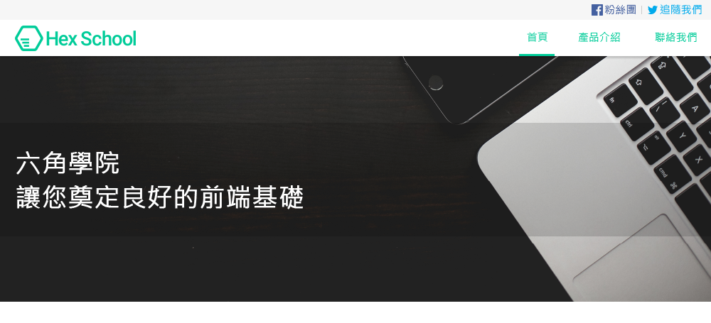

Recent Projects
-

Click to see more
網頁切版
×網頁切版
- 使用 HTML, CSS 完成網頁切版
- 使用 jQuery 呈現動畫效果
- 使用 Swiper 套件，呈現 slider 效果
Link: HexSchool / DessertShop / PerfumeShop
-
Click to see more
啟發式演算法實作
Metaheuristic Algorithms×啟發式演算法實作
Metaheuristic Algorithms- 使用 C++ 實作演算法
- 實作爬山法、模擬退火、粒子群優、蜂群、跳蛙等自然啟發式演算法
- 以 Sphere, Rastrigin, Rosenbrock 等數學函式測試迭代次數及演算法成效
Link: Github
-
Click to see more
歌詞搜尋引擎
-
Click to see more
大學畢業專題
虛擬實境建置銀髮族之懷舊情境×大學畢業專題
利用虛擬實境建置銀髮族之懷舊情境- 利⽤ Unreal Engine 及 HTC VIVE 實作 VR 場景
- 實際請年長者試⽤系統，得到年長者之正向回饋及建議
- 專題過程與公共衛⽣系、護理系師⽣合作，學習如何溝通、合作，並結合跨領域知識
- 為系上第 38 屆畢業專題系統發表優秀組別